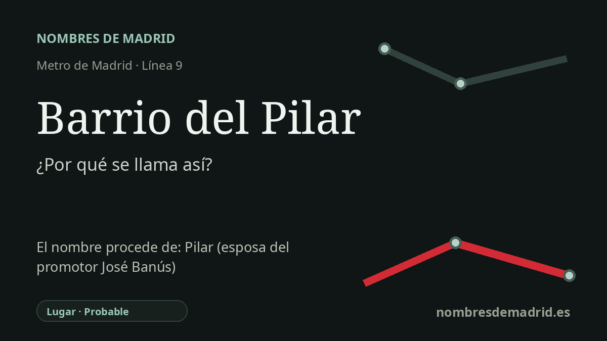

Publicado el · Investigación de Nombres de Madrid · Cómo verificamos cada origen · 9 fuentes consultadas
Respuesta rápida
La estación de Metro toma su nombre del Barrio del Pilar, al que da servicio. El nombre del barrio se explica habitualmente como una dedicatoria del promotor José Banús a su esposa, Pilar Calvo y Sánchez de León, y no como una advocación mariana directa.
La historia del nombre
El nombre de la estación es, ante todo, geográfico: Barrio del Pilar es la parada de Metro del barrio conocido con ese nombre en Fuencarral-El Pardo. El Ayuntamiento de Madrid registra el barrio municipal oficial como "Pilar", y el Consorcio Regional de Transportes sitúa la estación en la línea 9, con accesos por Ginzo de Limia y Melchor Fernández Almagro.
Detrás de ese topónimo está una de las grandes promociones residenciales del Madrid de posguerra. A comienzos de los años sesenta, el promotor José Banús Masdeu impulsó aquí un gran barrio de viviendas, sobre suelos baratos que las fuentes de historia local describen como antiguos terrenos de la Compañía de Jesús. La síntesis histórica de Madripedia señala que en 1970 la promoción reunía más de 45.600 habitantes en 13.872 viviendas, muchas de ellas de menos de 60 metros cuadrados.
El nombre "Pilar" suele asociarse de forma intuitiva con la Virgen del Pilar, más aún porque las fiestas del barrio se celebran en torno al 12 de octubre. Sin embargo, la explicación local mejor sostenida es otra: Banús habría dado a la promoción el nombre de su esposa, Pilar Calvo y Sánchez de León. Un reportaje de El Español/Porfolio de 2023 lo afirma de manera explícita, y la documentación oficial del BOE sobre la posterior Fundación José Banús Masdeu y Pilar Calvo y Sánchez de León confirma tanto el nombre completo de ella como su condición de viuda de Banús.
La cronología del transporte también está bien delimitada. La estación se inauguró el 3 de junio de 1983 dentro del tramo norte, entonces independiente, de la línea 9B entre Herrera Oria y Plaza de Castilla; ese tramo quedó integrado en la línea 9 el 24 de febrero de 1986. La prensa contemporánea de la inauguración mencionó una estación llamada "Pilar", probablemente como forma abreviada, mientras que las cronologías de transporte posteriores y la información actual del CRTM usan "Barrio del Pilar".
La interpretación mejor respaldada es que la estación toma el nombre del barrio y que el barrio probablemente fue llamado así por Pilar Calvo y Sánchez de León. La etimología directa de la estación es, por tanto, un topónimo de barrio, con un origen personal probable en un segundo nivel. La explicación es sólida, pero no consta un documento urbanístico, comercial o municipal de la promoción original de Banús que cierre la prueba archivística.